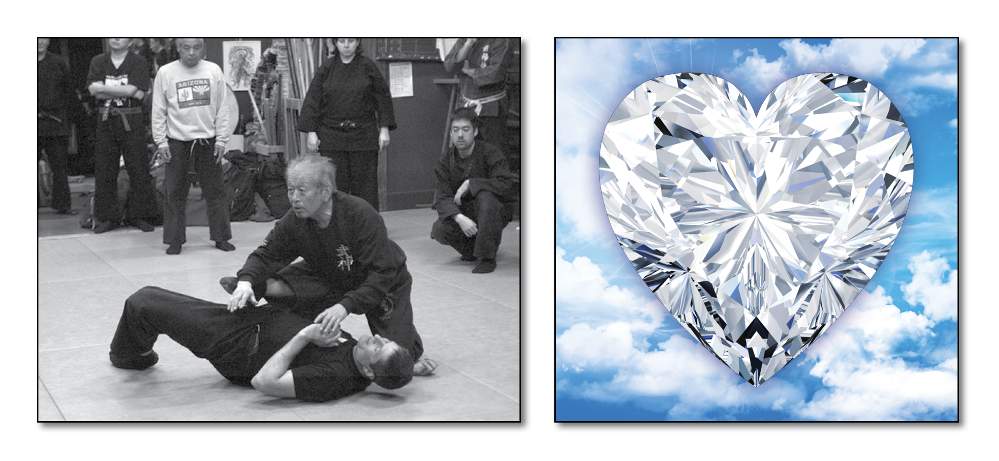

"School of the Jeweled Heart" - Dr. Hatsumi is the 21st Soke
Characteristics:
Very little of this school has been taught to the western world. Gyokushin Ryû has many sutemi waza techniques, and is more focused on the art and techniques of espionage, rather than fighting. It is believed that the techniques of Gyokushin Ryû are based on those of Gyokko Ryû. The methods of this school were taught in secret and it remained unmixed with other schools until it passed to Toda Nobutsuna.
Brief History:
It was founded in the mid 1500s by Sasaki Goemon Teruyoshi who was also the 10th Soke of Gyokko Ryû.
The History of Gyokushin Ryû Ninpo:
Gyokkushin Ryû Ninjutsu is a branch of Koshijutsu, and it is believed that its founder, Sasaki Goeman Teruyoshi, was from the Gyokko Ryû. The methods used in Gyokushin Ryû (its blocks, strikes and stances) strongly resemble those of Gyokko Ryû, and they both used the Ichimonji no Kamae in the same way. Sasaki Gendayu was in the employ of the Daimyo of Kishu, and was paid 200 Koku per year (1 Koku was enough to feed a man for a year), but this was later increased to 400 Koku. It is possible that he, like his father, was highly skilled in Gyokko Ryû. The Gyokushin Ryû was taught in secret in the Kishu and Takeda provinces, and sometime in the 17th century it came into contact with the Togakure Ryû and the Toda family. The exact circumstances are not known, but when the style passed to Toda Nobutsuna, it was not kept as such a close secret from then on.
Not much is known about the fighting style of the Gyokushin Ryû. The system concentrated on more of the espionage skills and abilities of ninjutsu than on hand to hand combat. This is common among ninjutsu systems. Gyokushin Ryû is known for its superior use of the Nagenawa, a lasso. Kano Jigero, the founder of Judo, was a friend of Takamatsu Sensei. It is thought that he taught at the Kodokan school as a guest instructor, and what he taught was Gyokushin Ryû. The style passed by Takamatsu Sensei to Masaaki Hatsumi along with many other styles of kobujutsu.
Soke of Gyokushin Ryû: